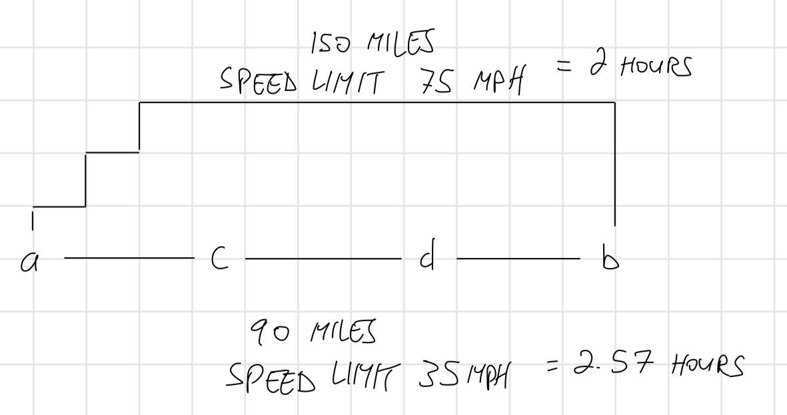
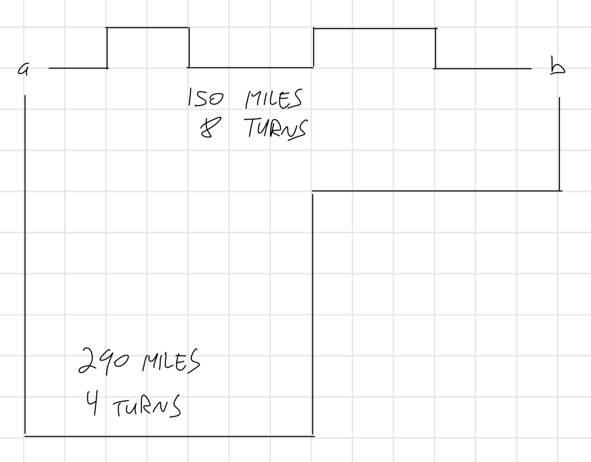
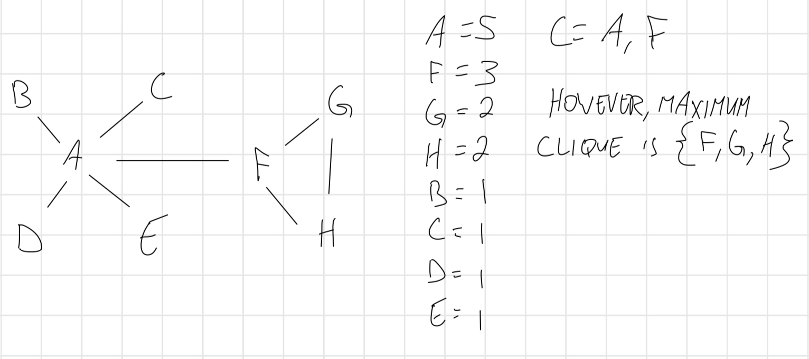

1-1: Show that a + b can be less than min(a,b).
ANSWER: -1 + -1 = -2
1-2: Show that a X b can be less than min(a,b).
ANSWER: -2 X 3 = -6
1-3: Design/draw a road network with two points a and b such that the fastest route between a and b is not the shortest route.

1-4: Design/draw a road network with two point a and b such that the shortest route between a and b is not the route with the fewest turns.

1-5: The knapsack problem is as follows: given a set of integers S = {s1, s2, ..., sn},
and a target number T, find a subset of S that adds up exactly to T. For example, there exists
a subset within S = {1, 2, 5, 9, 10} that adds up to T = 22 but not T = 23.
Find counterexamples of each of the following algorithms for the knapsack problem. That is, give an S and T
where the algorithm does not find a solution that leaves the knapsack completely full, even though a full-knapsack solution exists.
1-6: The set cover problem is as follows: given a set S of subsets S1, ..., Sm of
the universal set U = {1, ..., n}, find the smallest subset of subsets T ⊆ S such that ∪ti∈Tti = U.
For example, consider the subsets S1 = {1, 3, 5}, S2 = {2, 4}, S3 = {1, 4}, and S4 = {2, 5}.
The set cover of {1, ..., 5} would then be S1 and S2.
Find a counterexample for the following algorithm. Select the largest subset for the cover, and then delete all its elements from the
universal set. Repeat by adding the subset containing the largest number of uncovered elements until all are covered.
ANSWER: U = {1, 2, 3, 4, 5, 6, 7, 8, 9, 10}. S1 = {1, 2, 3, 4, 5, 6, 7, 8}, S2 = {9},
S3 = {10}, S4 = {3, 4, 5, 6, 7, 8, 9}, S5 = {1, 2, 10}. The largest subset would be S1. This would leave U = {9, 10}.
S4 and S5 do not contain the remaining elements of U, however S2 and S3 do, resulting in T = {S1, S2, S3}.
However, this can be completed with T = {S4, S5}
1-7: The maximum clique problem in a graph G = (V, E) asks for the largest subset C of vertices V such that
there is an edge in E between every pair of vertices in C. Find a counterexample for the following algorithm: Sort the vertices
of G from highest to lowest degree. Considering the vertices in order of degree, for each vertex add it to the clique if it is a neighbor
of all vertices currently in the clique. Repeat until all vertices have been considered.

1-8: Prove the correctness of the following recursive algorithm to multiply two natural numbers, for all integer constants c ≥ 2.
1-9: Prove the correctness of the following algorithm for evaluating a polynomial anxn + an-1xn-1 + ... + a1x + a0.
1-21: Do all the books you own total at least one million pages? How many total pages are stored in your school library?
ANSWER: I know I have roughly 100 books and 200 volumes of manga because, well... I like data.
Each volume of manga averages roughly 180 pages. That comes out to 36,000 pages. My books tend to average 400 pages. That's 40,000 more pages.
In total, that is 76,000 pages. So no, I do not have 1 million pages of books. That's a lot.
Now for my library. I'm going to break it down into two sections, due to bookshelf sizes. In the young children's section, there are 15 bookshelves that are 2 shelves high, and roughly 1.5x the width of my bookshelf.
That's 30 shelves of books, at 1.5x the capacity each of my shelves. Because of how much smaller the children's books are, there are likely 75 books per shelf.
30 shelves multipled by 75 is 2,250 young children's books. Having young children, and therefore having a pretty good amount of experience with these books,
I estimate each book to have 20 pages each on average. That's 45,000 pages of young children's books. Moving on to the rest of the library.
There are about 12 sections of bookshelves that are 6 shelves high. Nine sections have 8 bookshelves of the same with as the children's shelves.
Three sections are "ends" and only have 4 bookshelves. That is a total of 96 bookshelves, or 576 shelves. Subtract three bookshelves that are typically empty, 558 shelves.
Considering one of my shelves holds an estimated 6,840 pages of a similar mixture of paperback and hardcover books as my library, and the library shelves are 1.5x wider,
each shelf holds an estimated 10,260 pages per shelf. Multiply that by the 558 shelves, 5,725,080 pages. Add the 45,000 pages of young childrens books for a total
of 5,770,080 pages. That is about 76x more pages than my personal library. Because I own one full bookshelf, typically two books deep, as well as an extra two large bins of books
that don't fit, plus books that stay in my kids' rooms and the closet, I feel confident that 76x at the library is a decent estimation.
1-22: How many words are there in this textbook?
ANSWER: On average, a printed page is 350 words. There are 800 (790-something, but I'm rounding up because math) pages in this book. 350 x 800 is 280,000 words.
1-23: How many hours are in one million seconds? How many days? Answer these questions by doing all arithmetic in your head.
ANSWER: One hour is 60 minutes. 60 minutes is 3,600 seconds. Multiply that by 200 to get 720,000.
Tack on an extra 50x, which would be 180,000 to get to 900,000. From there, add another 20x to get 972,000.
If you add another 10x, you end up slightly over the 1mil mark at 1,008,000. So, another 8x instead would get you to 1,000,800, just baaaarely over.
In total, we multiplied by 278. So, there should be roughly 278 hours (rounded up a little) in 1 million seconds.
Now, 278 hours into days. There are 24 hours in a day. 240 hours in 10 days. That's 38 hours remaining, which is 1 extra day. So, 1 million seconds should be
11 days and 14 hours.
I checked Google because it was killing me not knowing how close I was: Google says 277.78 hours in 1 million seconds, and 11.57 days. Heck yeah!
1-24: Estimate how many cities and towns there are in the United States.
ANSWER: Oof. I'm not gonna do great on this one. Last time I saw a list of cities/towns in just Arizona, I was shocked at how many.
I'm gonna say like, 50 cities/towns per state. 50 times 50 is 2,500.
Google says: 19,495 cities, towns, and villages. Man, I was way off. Just Arizona has 90. Almost double what I thought. And, once again, I'm shocked.
Maybe this time I'll remember.
1-25: Estimate how many cubic miles of water flow out of the mouth of the Mississippi River each day. Do not look up any supplemental facts.
Describe all the assumptions you made in arriving at your answer.
ANSWER: Pass. Off the top of my head, I'm not even sure where to begin with this one. I don't know what goes into calculating "cubic miles of water flow" in any sense, or how much a cubic mile is, or literally anything about the Mississippi River.
I'd rather admit I have no idea and look up the method so I can learn it.
That being said, I looked up amount of cubic feet in a cubic mile. And holy poop. A cubic mile is stinkin' huge. It's 5,280 x 5,280 x 5,280 cubic feet in a cubic mile.
Mississippi River has a flow rate of 600,000 cubic feet per second. Multiply that by 86,400 (amount of seconds in a day) and you get
51,840,000,000. A cubic mile is 147,197,952,000 cubic feet. Nearly triple. So there's "only" about 1/3 of a cubic mile of water flow out of the mouth of the Mississippi River
each day. "Only".
1-26: How many Starbucks or McDonald's locations are there in your country?
ANSWER: I'm gonna say like, 800 McDonalds. That sounds about right. No real evidence as to why. It just seems like a lot.
Google says (drumroll please): 13,528. Holy cow. I was way off. JUST California has 1.224.
1-27: How long would it take to empty a bathtub with a drinking straw?
ANSWER: Let's assume an average of 20 gallons of water in the tub when my kids take a bath, and a drinking straw holding like, 13 milliliters.
20 gallons is 75,708 milliliters. So, 75,708 / 13 = 5,824 (rounded up because filling up the straw partially would still count as another fill). Now, how long would that take?
Let's say we built a siphon that emptied a straw's worth of water every second (slightly faster than a human could, but much more sanitary. I'm not putting my mouth in
used bathwater). That's 5,824 seconds. Or, barely over 97 minutes. Not bad.
1-28: Is disk drive access time normally measure in milliseconds (thousandths of a second) or microseconds (millionths of a second)?
Does your RAM memory access a word in more or less than a microsecond? How many instructions can your CPU execute in one year if the machine
is left running all the time?
ANSWER: Disk drive access is measured in milliseconds. RAM is much faster, working in nanoseconds, so less than a microsecond.
A CPU is, uhhh, pretty fast. The Cortex-M7 (the CPU in the Panic Playdate) has a clock speed of 168MHz. In other words, 168 million cycles per second.
So, 168 * 106. Now, multiply that by (60 seconds in a minute * 60 minutes in an hour * 24 hours in a day * 365 days in a year), you end up with
168 * 106 * 31,536,000. Or, 5.303168 * 1015 instructions per year. And that's for just a tiny yellow console with a crank!
1-29: A sorting algorithm takes 1 second to sort 1,000 items on your machine. How long will it take to sort 10,000 items...
1-30: Implement the two TSP heuristics of Section 1.1 (page 5). Which of them gives better solutions in practice? Can you devise a heuristic that works
better than both of them?
ANSWER: WILL ADD LINK HERE
1-31: Describe how to test whether a given set of tickets establishes sufficient coverage in the Lotto problem of Section 1.8 (page 22).
Write a program to find good ticket sets.
ANSWER: WILL ADD LINK HERE
1-33: There are twenty-five horses. At most, five horses can race together at a time. You must determine the fastest, second fastest, and third fastest horses.
Find the minimum number of races in which this can be done.
ANSWER: Five races. Have each horse race one time, record all their times, then sort them by the fastest.